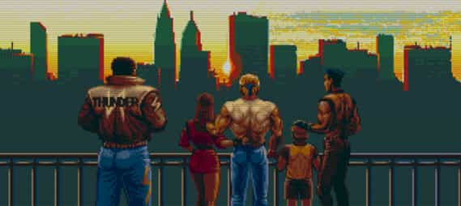

格鬥三人組（Bare Knuckle）
FFB832:0050 血量不減
FFFF21:000A 無限警車支援
格鬥四人組（Bare Knuckle II）
FFEF81:0068 血量不減
格鬥四人組 2（Bare Knuckle III）
攻略
星數可以加強 → → B 招式的威力。
第六關救出將軍與否，會有不同結局。救法是 60 秒內，破壞一樓中間房間的 SWITCH 2 和二樓中間房間的 SWITCH 1。
美版 EASY 難度只到第五關，無法完美結局。

完美結局
密技
選 AXEL，在開場動畫看到定時炸彈時，按 A 不放，並順時針方向不停轉十字鈕，就這樣進入遊戲的話，扣血大絕招會變成整個畫面都在震動，而且所有敵人都會震飛！厲害的是不扣血，從頭到尾就這樣直到破關吧～
選 SAMMY，故意讓他在 0 分情況下被打死，活起來後普攻會變成快速搥。
選 ZAN，看到 ROUND 1 START 時，1P 與 2P 同時按 C 鈕，他的普攻會變得又快又廣。
遊戲標題畫面按「上 + B」不放，再按 START 進入遊戲，可多選一個角色：袋鼠（OICTY）。
游標在 BATTLE 上，按↑ + B 不放，然後進入 OPTION，會多出 ROUND SELECT 項目，可以選關。
打倒第一關 BOSS 後，按住 B 不放，直到進入下一關，往後角色命用完，CONTINUE 接關換人時，可以選擇 SHIVA。
修改
FFDF6C:0034 血量不減
00F284:6012 滿星
00C916:662E 密技版 AXEL
0095A8:661A 密技版 ZAN
FFFB0D:01 接關時可選擇 SHIVA
FF88E2:0099 第六關時間 99 秒（用完馬上關閉，因為無法進入有 SWITCH 的房間。）